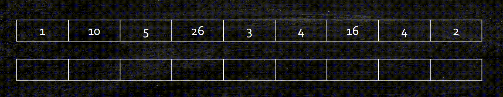
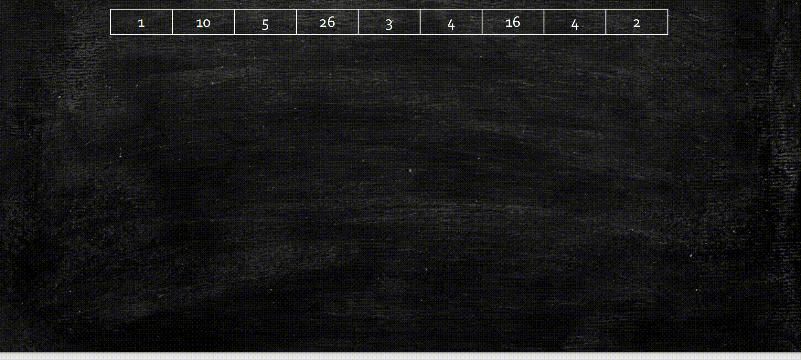
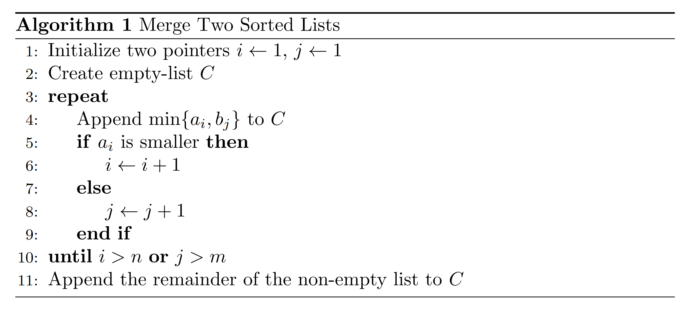
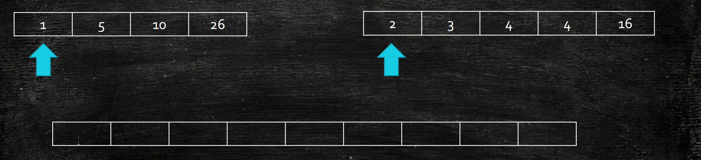

分治法(2)：归并排序与求逆序数
本文介绍了分治法在排序算法中的应用——归并排序，并应用归并排序来设计求逆序数算法。此过程中，我们会学习算法的正确性分析以及分治算法时间复杂度分析的主定理。
归并排序
今天，我们将从一类常用的算法——排序算法开始。考虑一个简单的排序问题，输入是个整数，要求输出这个数从小到大排成的序列。你能想到什么排序的算法呢？
从插入排序开始
最直接的思路是插入排序。我们维护一段已经有序的序列，并且不断将后来的元素插入合适的位置，直到所有元素都已被插入。

接下来，我们考虑这个算法的正确性及时间复杂度。对于正确性分析，这似乎是显然的。考虑到每次都是将元素插入已经有序的序列，让序列再次有序，我们可以用数学归纳法证明。
- 基本情况：第1次插入整数后，当然序列是有序的。
- 归纳：
- 假设序列在第次插入后是有序的，我们要证明序列在第次插入后保持有序。
- 设我们把整数插入了位置。那么根据算法，有 和 ，故插入后序列也是有序的。
对于时间复杂度，由于我们一共要插入个数，每次插入最多次操作，因此其复杂度为。那么，我们能不能用分治法来提升排序算法的性能呢？
分治法的设计
回顾一下，分治法的主要流程是：将原问题分解为几个规模更小的子问题，递归地求解这些子问题，再将子问题的解合并得到原问题的解。
分治法的设计还是两件事：
- 怎么分（如何将原问题划分为更小的子问题）
- 怎么治（如何将子问题的解合并为原问题的解）
由此，我们很自然的想到，可以将输入平均划分为两个子序列，对这两个子序列分别排序，再将排序结果合成最终的有序序列——这就是归并排序的思想。

现在”怎么分“已经解决了，但”怎么治“并没有解决，也就是如何将两个有序的子序列合并成一个完整的有序序列？
子序列合并
我们目前的问题是，给定两个有序序列和，如何将其合并为一个有序序列？
最直接的想法是仿照插入排序，将中的元素逐个插入中。这样的话，我们共要插入个数，每个数比较次，合并的时间复杂度为。那么对于整个归并排序，会有
可以求得，。
这个失败的结果在意料之内。和整数乘法的朴素分治法一样，我们只是改变了元素之间两两比较的顺序，总的操作次数并没有减少，因此时间复杂度并没有降低。
想要降低时间复杂度，我们就要避免冗余计算或操作！在这个过程中，有没有什么性质我们没有用到？似乎是有的，那就是子序列也是有序的，但我们在插入的时候并没有考虑这个。那么，基于这个性质有没有更聪明的做法呢？

基于和都是有序序列，我们可以维护两个指针和。这两个指针分别从左到右扫描和，并不断把和中更小的数加入中，直至其中一个到达序列末尾。这时我们把剩余的元素依次加入。

这个合并算法的正确性可以由数学归纳法证明。